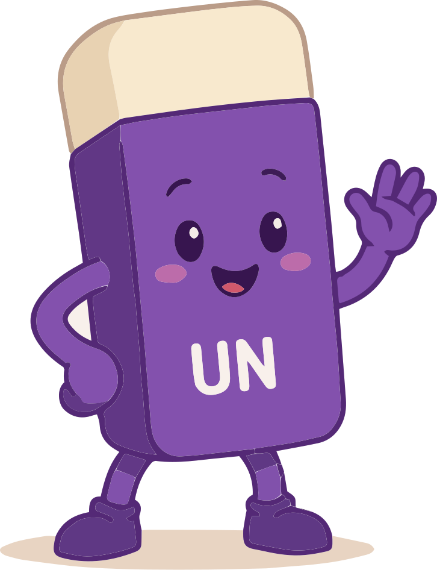
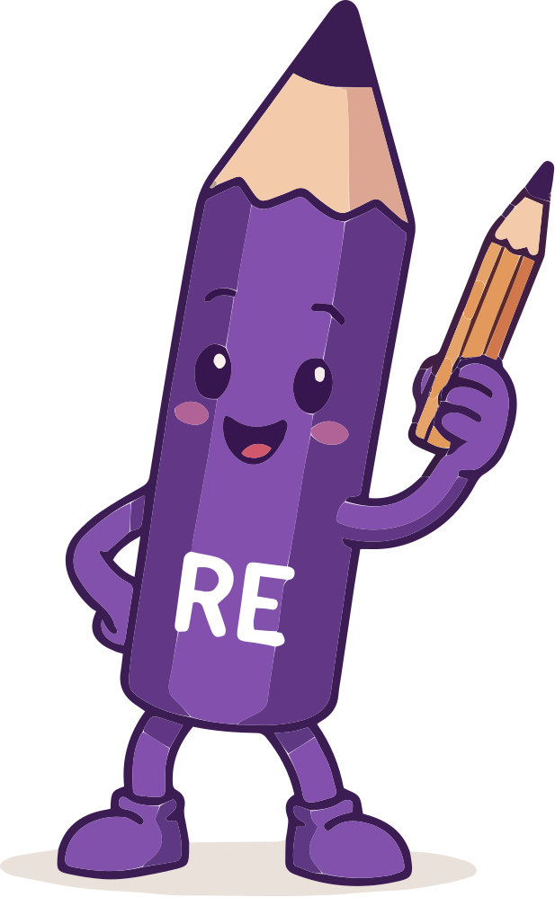

A clearer lens on fairness - now a living product with a face. This edition introduces Lensy, our mascot, alongside the canvas, the dual-audience system, and the dark mode.
Version 2.1June 2026theequallens.com
00 - What's new
Meet the mascot. Meet the product.
v1 set the foundation - the eQ idea, the two values, voice, colour, type, logo. v2 turned it into an interactive website. v2.1 gives the brand a face: Lensy.
Lensy is our mascot new
A curious alien who just landed on Earth and can't stop asking "why?". The face of the brand. → p.03
The site is a canvas
Myths hide in the page; the UN/RE tools erase them and write the truth. → p.11
Two audiences, one brand
A Kids mode and an Adult mode, chosen on arrival and switchable any time. → p.13
Sun yellow & Sky blue; every colour ships as a named CSS token. → p.07, 15
The Equal Lens - Brand & Product Guidelines00
01 - Foundation
See through the eQ lens.
Our mark reads as eQ - and that double meaning is the whole idea. eQuality meets EQ, emotional intelligence. One way of seeing the world: fairly, and with empathy. Everything in this book ladders up to it - including Lensy, whose eyes are the mark.
Vision
A generation that treats fairness as something they do - noticing bias and choosing better, on their own.
Mission
We help people unlearn bias and relearn empathy through play - before inherited ideas harden into lifelong assumptions.
Positioning
For the schools, families, workplaces, and communities raising and shaping each other, The Equal Lens makes bias visible through games and play - because what we absorb early, and repeat unthinkingly, doesn't have to be permanent.
The Equal Lens - Brand & Product Guidelines01
02 - Core values
Unlearn & Relearn
Two moves sit at the heart of everything - and the UN & RE characters are those moves. They aren't decoration; they're the value system, and on the site they become the tools you pick up (p.11).

Unlearn
UN · the eraser
AwareCuriousBrave
Question and let go of inherited bias. Start fresh. On the page, UN erases the myth.

Relearn
RE · the pencil
EmpathyCreativeHopeful
Rebuild with empathy and imagination. Draw something fairer. On the page, RE writes the truth.
Unlearn → Relearn → Grow → repeat
A continuous loop, not a one-time fix. Awareness, empathy, critical thinking and inclusion all live inside these two.
The cast, simply put:Lensy (p.03) is the face you remember - the curious friend who asks the question. UN & RE are the two moves you make once a question is asked. One host, two tools.
The Equal Lens - Brand & Product Guidelines02
03 - The mascot
Meet Lensy.
A curious alien who just landed on Earth and is trying to understand humans. Lensy doesn't teach - the more Lensy looks around, the more confused Lensy gets, and the questions just fall out. "Why is that a boys' toy?" The official face of The Equal Lens.
NAME Lensy
SPECIES Curious Alien
MISSION Understand Humans
SPECIAL SKILL Asking questions that make stereotypes sound strange
FAVOURITE WORD "Why?"
CURRENT STATUS Confused, but learning
Lensy is...
a curious friend · the one asking the question everyone forgot to ask · genuinely puzzled · on your side
Lensy is NOT...
a teacher · a superhero · an activist · the voice of authority · here to say what's right or wrong
When a child sees Lensy, they should feel: "I want to help this little alien understand Earth." Personality in three words - curious, innocent, adorable.
The Equal Lens - Brand & Product Guidelines03
04 - Lensy by design
Built from the mark.
→
Lensy's face is the eQ logo: the ♂/♀ interlock becomes two big, expressive eyes. That's the magic trick - the mascot and the mark are the same shape, so Lensy is instantly, unmistakably ours.
Wave · hello
Stand · neutral
Think · "wait, why?"
Idea · learning
Design rules
Big expressive eyes (from the mark) · small alien body · neutral - not male, not female · purple palette · childlike proportions · simple shapes that survive as a sticker, an animation, or on a workbook. A visitor, not a human in a costume.
Never let Lensy feel
preachy · activist-like · serious · corporate · like a know-it-all. Lensy is innocent and a little confused - that's the whole charm.
Lensy's spaceship
Cute, compact, and purple - built for exploration and asking questions, not battles. Rounded edges, circular windows, a soft glow, a little ramp Lensy walks down, and the eQ mark on the side as Lensy's signature. The ship is part of the brand identity, not a prop.
The Equal Lens - Brand & Product Guidelines04
05 - Lensy in action
The friend who asks "why?"
Lensy's signature moment on the site. After a few seconds, a little spaceship zooms in and lands, the door opens, and Lensy pops out with a question - playful and never in the way. Curiosity, not a lecture.
Hi! I'm Lensy. I just landed on Planet Earth. My spaceship is still trying to understand a few things here...
At the airport I saw a toy store. One aisle said "Boys." One said "Girls." Nobody could explain why dinosaurs and science belonged on only one side. Can you help me understand?
Tell Lensy what you think
Ask Lensy another question
Meet Lensy
The pop-up, roughly
A different question each visit
"Why are some toys called boys' toys and girls' toys?" · "Why do people say some colours belong to boys or girls?" · "Why do people think some jobs belong to only one gender?" · "Why are emotions taught differently?"
Catchphrases
"Wait... why?" · "My spaceship is confused." · "Can you help me understand?" · "That's interesting..." · "I've only been on Earth for three days."
One character, everywhere
Reuse Lensy across website pop-ups, workshops, activity books, classroom games, social posts, stickers, and animations. Same voice every time: the friend who asks the question everyone forgot to ask.
Rules of engagement: appears after ~3-5 seconds · easy to dismiss · never blocks the content · asks, never tells · always leaves the child with the question, not the answer.
The Equal Lens - Brand & Product Guidelines05
06 - Voice & tone
Curious. Warm. Brave.
Playful, not preachy
Invite a smile before a lesson.
Curious, not corrective
Ask more than we tell. (Lensy's whole job.)
Warm, for everyone
Challenge the idea, never the person.
Hopeful & active
Learned, so it can be unlearned.
Two registers, one voice
Register
Stays
Shifts to
A line sounds like
Kids
Curious, warm, brave
Short, vivid, encouraging
"Some things feel normal - but are they fair?"
Adult
Curious, warm, brave
Wry, knowing, a little deadpan - still kind
"Bias doesn't retire when you grow up."
Adult copy can be drier and more self-aware, but never cynical, crude, or shaming. Guardrail: keep it PG - a kid landing on the adult site should be totally fine.
Writing style
Do
Sentence case · hyphens, not em dashes · active voice · leave agency ("what would you do?") · vary myths, never repeat a line on a page
Avoid
SHOUTING CAPS · should / must / wrong · "the right answer" · jargon · "biasness" and other site-isms · em dashes in copy
The Equal Lens - Brand & Product Guidelines06
07 - Colour · light (Kids)
A violet system, four playful accents.
Equal Violet
#553286 · primary / brand
50 F3F0F6
100 E5E0ED
200 C5B6DE
400 7F65A4
600 553286
700 44288B
800 331E50
900 221436
Insight Teal · #2DD4BF Unlearn accent
Grow Coral · #FF7A5C Relearn accent
Sun · #FFC94D Highlight & CTA
Sky · #4FB0E8 Support
Paper · #FBF9FF · page bg
Surface · #FFFFFF · cards
Mist · #E7E0F1 · lines / hover
Violet leads, neutrals carry, accents appear in small doses. Sun is our call-to-action yellow (always with Deep Indigo text on it); teal marks "unlearn" moments, coral marks "relearn". Lensy lives entirely in this violet palette.
The Equal Lens - Brand & Product Guidelines07
08 - Colour · dark (Adult)
Same brand, after dark.
Adult mode runs on a dark theme. We don't restyle the brand - we just flip a handful of tokens. Surfaces go deep indigo, text goes light, and Equal Violet lightens so it stays legible on dark. The accents (teal, coral, sun, sky) are unchanged.
Paper · #15101F page bg
Surface · #221A30 cards
Mist · #3A2E4D lines / hover
Band · #241B38 footer / CTA
Ink · #F1ECFA · text
Brand · #C9B8E6 · lightened violet
Brand-soft · #B3A4D6 · muted violet
Rules of the dark
Sticky notes stay pastel in both themes (with fixed dark text) so the "paper" metaphor survives · the Sun CTA keeps Deep Indigo text · switching themes cross-fades over 320ms · the toggle and the welcome modal are the only ways in or out.
The Equal Lens - Brand & Product Guidelines08
09 - Typography
Playful, with purpose.
Baloo 2
Headlines & mascots · 600 / 700 / 800
Wait... why?
Poppins
Wordmark & UI labels · 500 / 600
The Equal Lens · Programs · About
Nunito Sans
Body · 400 / 600 / 700
Some things feel completely normal - but are they actually fair? The quick brown fox jumps over the lazy dog.
The rule
Baloo 2 carries the playful headline voice across the whole brand - kid and adult, and Lensy's speech (the font-hand token). Poppins handles the wordmark and small UI labels; Nunito Sans does all the reading. All three are free on Google Fonts.
The Equal Lens - Brand & Product Guidelines09
10 - Logo
The eQ mark
Primary · violet on light (Kids)
Reversed · white on dark (Adult)
Mono · single colour
Clear space & minimum size
Keep clear space ≥ the height of the mark's opening. Never below 24px / 8mm tall. The browser tab / app icon now uses Lensy's face (which is this mark) - see p.03.
Don't
✕ recolour
✕ stretch
✕ rotate
✕ add effects
Exports live in /brand/logo/; mascot & ship art in /public/ (un, re, Lensy poses, Ship views).
The Equal Lens - Brand & Product Guidelines10
11 - The canvas
The whole site is a canvas.
Our signature interaction. Bias hides in the page as struck-through "myths" - in doodles, scattered text, and sticky notes. Visitors pick up a tool and act on it. The values aren't explained; they're played.
Browse
The default cursor. Read, click, explore. Press Esc to drop any tool.
Unlearn · UN
The eraser. Rub out a myth - the struck text and the sticky note disappear.
Relearn · RE
The pencil. Reveals the truth on a note, or free-draws on the page.
How a myth is built
Myth
Boys don't cry.
→
Truth
Everyone cries. Feelings aren't a gender.
Each myth is structured content (myth · truth · explanation · sources · category · audience) in an OKF-aligned knowledge base. Content drives the interaction - add a myth file and it appears on the page.
Accessibility: the canvas is an enhancement, never a gate. Touch, keyboard, and reduced-motion all get a plain fallback; on small screens myths become tappable cards above the footer.
The Equal Lens - Brand & Product Guidelines11
12 - Stickers, doodles & motion
The playful kit.
Sticker surface
Sticker
CTA
Chunky outline (2.5px Ink) + a hard offset shadow (4px 4px, no blur). Cards, buttons, notes - all share this cut-out look. The outline uses the Ink token, so it flips with the theme.
Doodle set
Eight hand-drawn marks - squiggle, sparkle, arrow, heart, star, spiral, zigzag, swirl - in accent colours. Used sparingly as easter-egg texture, never as functional icons.
Motion - lively but tasteful
Token
Motion
Used on
anim-float
gentle 9px rise & fall, 5s
doodles, hero art
anim-wobble
±4° rock, 4.5s
stars, badges
anim-bob
bob + tilt, 5.5s
mascots
anim-pop
spring scale-in, 0.5s
notes & Lensy appearing
hover-pop
lift + 1.5° tilt on hover
cards, buttons
Theme changes cross-fade over 320ms. Everything here is disabled under prefers-reduced-motion - motion is seasoning, never load-bearing.
The Equal Lens - Brand & Product Guidelines12
13 - Two audiences, one brand
Kids & grown-ups, same lens.
Bias doesn't retire when you grow up. So the site runs in two modes - chosen on arrival with a quirky "How do you identify today?" modal, and switchable any time from the header toggle. The choice is remembered.
Wry, knowing, dark. Topics: work & money, relationships & home (raising kids, parental leave), single dads adopting, stigma around women ageing or unmarried, body image & media, leadership & confidence.
The one guardrail
Adult content stays PG. It can be candid and dryly funny, but a child who wanders into Adult mode should see nothing harmful - just grown-up situations. Every adult myth is written to that bar.
Mechanically: an audience cookie drives everything - copy, myths, theme, even the logo. No choice yet = the welcome modal; Esc or "decide later" quietly defaults to Kids so we never nag.
The Equal Lens - Brand & Product Guidelines13
14 - Messaging
How we say it.
Role
Line
Use for
Signature
Unlearn. Relearn. Grow.
Lockup, sign-offs, merch
Hook
Bias is learned - so it can be unlearned.
Headlines, ads, pitch openers
Concept
See fairness through the eQ lens.
About page, decks
Adult hook
Bias doesn't retire when you grow up.
Adult-mode hero, campaigns
Lensy
Wait... why?
Lensy moments, kids & social
Boilerplate · 25 words
The Equal Lens helps people unlearn bias and relearn empathy through play - turning fairness into something we notice, question, and create, not something we're lectured about.
Boilerplate · 100 words
We don't learn bias in lessons - we absorb it from playgrounds, media, family, workplaces, and the words around us. Much of it is set early, and the rest goes unquestioned. The Equal Lens exists to interrupt that. We design playful, purposeful experiences - games, scenarios, a site you can literally draw on, and Lensy, a curious alien who asks the questions we forgot to - that make bias visible and invite reflection, rather than lecturing about fairness. Two moves sit at the heart of everything: unlearn inherited assumptions, and relearn with empathy. Bias is learned - so it can be unlearned.
Every brand decision ships as a named CSS token, defined once and flipped for the dark theme. Design and build reference the same names, so they can't drift. This is the full map.
Token
Light (Kids)
Dark (Adult)
Role
--color-brand
#553286
#C9B8E6
Primary violet
--color-brandsoft
#7F65A4
#B3A4D6
Muted violet
--color-paper
#FBF9FF
#15101F
Page background
--color-surface
#FFFFFF
#221A30
Cards / notes
--color-mist
#E7E0F1
#3A2E4D
Lines / hover
--color-ink
#221436
#F1ECFA
Text & outlines
--color-band
#553286
#241B38
Footer / CTA band
--dot
#ECE6F6
#2A2140
Dotted-paper texture
--color-insight
#2DD4BF
Teal · Unlearn
--color-grow
#FF7A5C
Coral · Relearn
--color-sun
#FFC94D
Yellow · highlight / CTA
--color-sky
#4FB0E8
Blue · support
--font-display
Poppins
Wordmark / UI
--font-body
Nunito Sans
Body
--font-hand
Baloo 2
Headlines / mascots / Lensy
Tokens live in src/app/globals.css (dark values under [data-audience="adult"]). Character art in /public/: un.svg, re.svg, Lensy - {Wave,Stand,Think,Idea,Icon}.svg, Ship - {Front,Diagonal}.svg.
Unlearn. Relearn. Grow.
The Equal Lens · Brand & Product Guidelines · v2.1 · June 2026
The Equal Lens - Brand & Product Guidelines · v2.115